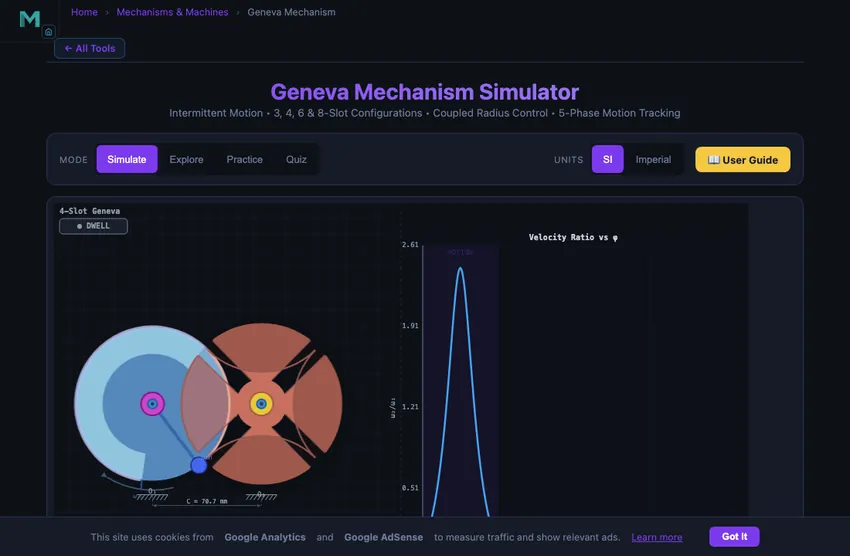
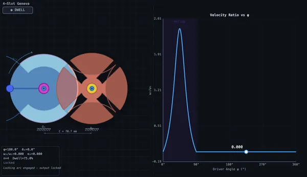

Geneva Mechanism Animation & Simulator
3D Model — Geneva Mechanism Animation & Simulator
Watch and control a Geneva mechanism in real time — adjust slots (3–8), crank & wheel size, and see the intermittent motion, dwell and locking phases animate live. Free, no signup.
Intermittent Motion • 3, 4, 6 & 8-Slot Configurations • Coupled Radius Control • 5-Phase Motion Tracking
1 Overview
The Geneva Mechanism Simulator is an interactive tool for studying the Geneva drive, which converts continuous rotation into intermittent (indexed) rotary motion. A driver disc with a pin engages radial slots in the Geneva wheel, advancing it by a precise angle each cycle. Between engagements, the driver’s embossed locking arc band slides into concave notches on the Geneva wheel, preventing any rotation during the dwell phase.
This simulator features coupled crank & wheel radius sliders with full kinematic synthesis, 5-phase motion tracking (Dwell → Engage → Drive → Exit → Lock), and real-time angular velocity/acceleration graphs across 3, 4, 6, and 8-slot configurations.
2 Loading the Mechanism
The simulator opens in Simulate mode with a 4-slot Geneva mechanism. The split canvas shows the animated mechanism on the left and a live graph on the right.
- Switch between 3, 4, 6, and 8-slot configurations using the Slots tabs.
- Adjust Crank Radius a or Wheel Radius R via sliders or type exact values into the companion text inputs (coupled by R = a/tan(π/n)).
- Adjust RPM to change the driver speed.
- Toggle SI / Imperial to switch between mm and inches for radius displays.
- Click the canvas or press Space to pause/resume. Use Arrow keys to step.
- Right-click the canvas for options: Copy Values, Reset Animation, Toggle Grid.
3 Watching the Motion
The left canvas shows the driver disc (blue) rotating with its pin (orange) and a distinct locking arc band (lighter blue embossed surface). The Geneva wheel (salmon) has radial slots and concave locking-arc notches between each slot. The animation tracks 5 phases: Dwell (locked), Engage (pin enters slot), Drive (pin pushes wheel), Exit (pin leaves slot), and Lock (locking arc seats into notch).
The right canvas displays live graphs: ω₂/ω₁ (velocity ratio — characteristic pulse), α₂/ω₁² (acceleration ratio — spikes at entry/exit), or θ₂ (staircase displacement).
4 Geometry & Theory
Study 12 concepts in three categories:
- Basics — Geneva anatomy, intermittent motion, slot count effects, locking arc.
- Kinematics — Indexing angle, dwell ratio, angular velocity equation, angular acceleration.
- Design & Applications — Film projectors, indexing tables, design parameters, advantages/disadvantages.
5 Try a Problem
Practice generates random problems on indexing angles, dwell ratios, centre distances, and velocity calculations. Quiz tests knowledge with 5 randomised questions from a 15-question pool.
6 Tips & Keyboard Shortcuts
- Watch the velocity ratio graph — it shows the characteristic pulse during the motion phase and zero during dwell.
- Compare different slot counts to see how dwell percentage increases with more slots.
- Notice how the acceleration spikes at slot entry/exit — this is the main limitation of Geneva mechanisms at high speed.
- Observe the locking arc contact — during dwell, the driver’s embossed band (lighter blue) slides into the Geneva wheel’s concave notch (highlighted), showing the secondary sliding contact that prevents backlash.
- Use the coupled radius sliders or type exact values into the companion text inputs. Crank Radius a and Wheel Radius R are linked by R = a/tan(π/n).
- Switch SI / Imperial in the mode bar to toggle between mm and inches for radius displays.
- Right-click the canvas to access Copy Values, Reset Animation, and Toggle Grid options.
- Keyboard: Space = pause/resume, Arrow Left/Right = step 2° per press.
- Try different presets to see real-world configurations, then explore how geometry affects motion.
What Is a Geneva Mechanism?



A Geneva mechanism (also called a Geneva drive or Maltese cross mechanism) converts continuous rotation of a driver disc into intermittent rotation of a driven Geneva wheel. The driver carries a pin on a rotating crank arm that periodically enters radial slots in the Geneva wheel, advancing it by a precise angle each cycle. Beyond this pin-slot connection, a secondary sliding contact exists: the driver’s embossed locking arc band mates with concave locking-arc notches on the Geneva wheel, positively locking the output during the dwell phase and eliminating backlash.
Locking Arc Contact & 5-Phase Motion
This simulator visualises the complete motion cycle as five distinct phases: Dwell (locking arc seated in concave notch — wheel stationary), Engage (pin enters the next slot), Drive (pin pushes wheel through indexing angle), Exit (pin leaves the slot), and Lock (locking arc re-engages the next notch). The concave notch regions on the Geneva wheel are shaded to show exactly where the driver’s outer arc makes sliding contact, while the embossed locking arc band on the driver is rendered in a distinct colour.
Coupled Radius Control & Kinematic Synthesis
The Crank Radius a and Wheel Radius R sliders are coupled by the kinematic constraint R = a/tan(π/n). Adjusting one automatically updates the other, along with the centre distance C = a/sin(π/n). This kinematic synthesis ensures proper pin engagement geometry, prevents pin overshoot beyond slot length, and maintains correct locking arc proportions for all 3, 4, 6, and 8-slot configurations. Slider ranges adapt dynamically to each slot count.
How Slot Count Affects Performance
The number of slots n determines the indexing angle (α = 360°/n) and the dwell percentage. A 4-slot Geneva advances 90° per cycle with 62.5% dwell time. A 6-slot Geneva advances only 60° with 75% dwell. More slots provide longer dwell periods for operations like machining, assembly, or inspection, but produce smaller indexing steps. The minimum practical slot count is 3, as fewer slots cannot geometrically accommodate the locking arc.
Kinematics & Angular Velocity
During the motion phase, the Geneva wheel angular velocity varies as ω₂/ω₁ = (M·cosφ − 1) / (1 + M² − 2M·cosφ), where M = 1/sin(π/n) is the centre distance ratio and φ is the driver angle. The velocity starts and ends at zero (guaranteed by the right-angle entry condition), with a peak of 1/(M−1) at the midpoint. The angular acceleration shows sharp spikes at slot entry and exit, which is the primary speed limitation of Geneva mechanisms.
Industrial Applications
Geneva mechanisms are found in film projectors (frame advance), rotary indexing tables (manufacturing), watch mechanisms, bottling machines, CNC tool changers, and packaging equipment. They provide precise, repeatable positioning (30–120 arc-seconds accuracy) without feedback control systems.
What Geneva Drives Were Actually Used For
The mechanism gets its name from the watchmaking tradition of Geneva, Switzerland. The original 18th-century application was in watch movements: every time the seconds wheel completed a revolution, the Geneva mechanism advanced the minutes wheel by one tooth. The intermittent drive ensured the minute hand jumped exactly when expected and held position between jumps.
By the 20th century the same principle was solving very different problems:
- Film projectors. The classic application. Cinema film needs to step from frame to frame 24 times per second, with each frame held perfectly stationary for 1/48 of a second behind the gate while the shutter opens. A Geneva drive provides exactly this: 4-slot wheel rotates 90° per cycle (one frame), dwells while the shutter exposes, then snaps to the next frame. The arrangement’s precision (no backlash thanks to the locking arc) is why early projectors had stable images.
- Rotary indexing tables. Industrial machine tools that need to present multiple workpieces or operations in sequence use Geneva-derived indexers. A 6-slot table advances 60° per cycle and holds rigidly between movements while machining happens.
- Counter and odometer mechanisms. The wheels that show miles or kilometres on older mechanical odometers used Geneva-like intermittent drives to advance each digit only when the preceding digit rolled over from 9 to 0.
- Pick-and-place automation. The wheel holds parts at workstations while operations happen, then indexes to the next station. Industrial assembly lines still use this geometry on rotary tables, though servo motors increasingly replace pure mechanical drives.
The Geometry — Why 4 and 6 Slots Are the Standard
The number of slots n on the Geneva wheel determines the indexing angle (360°/n per cycle) and the dwell-to-drive time ratio. The geometry that makes the mechanism work cleanly is constrained: the crank pin must enter the slot tangentially to avoid impact loading. This sets the centre-to-centre distance at C = r/sin(180°/n), where r is the crank radius. The arrangement gives a smooth, shock-free engagement, but only for specific n values.
For n = 4, the dwell occupies 270° of crank rotation and the drive 90°. For n = 6, dwell is 240° and drive 120°. As n increases, the dwell shrinks proportionally and at some point the mechanism becomes equivalent to a continuous gear — not useful for intermittent motion. In practice n is 3 to 8; six is the sweet spot for indexing tables.
Why You See Servo Motors Replacing Geneva Drives
Modern indexing machines often use a brushless servo motor and a programmable controller instead of a pure mechanical Geneva drive. The trade-offs:
- Servo wins on flexibility. Change the indexing angle in software, no hardware change.
- Servo wins on dwell control. Variable dwell time, including stop-and-wait for sensor input.
- Geneva wins on cost. Pure mechanical, no electronics, no power, no failure modes.
- Geneva wins on reliability. Locking arc prevents backlash and overshoot; no software bugs possible.
- Geneva wins on speed at low duty cycle. The mechanism can index hundreds of times per second; a servo struggles above 30 Hz.
For applications where reliability and cost matter more than flexibility (vending machines, mechanical counters, older watch movements still in production), the Geneva drive is still the right answer 150 years after its first design.
References
- Norton, R. L. — Design of Machinery, 6th ed., Chapter 9 (Cam Design) and 10 (Intermittent Motion).
- Shigley & Uicker — Theory of Machines and Mechanisms, 5th ed.
- Bickford, J. H. — Mechanisms for Intermittent Motion, Industrial Press. The specialist reference.
Explore Related Simulators
If you found this Geneva Mechanism simulator helpful, explore our Slider-Crank Mechanism simulator, Scotch Yoke simulator, Four-Bar Linkage simulator, and Cam & Follower simulator for more hands-on practice.